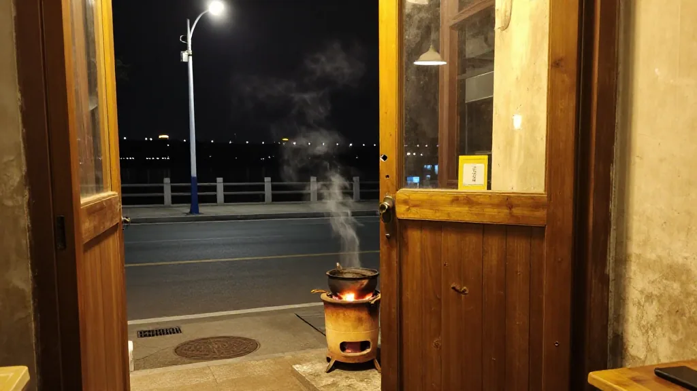
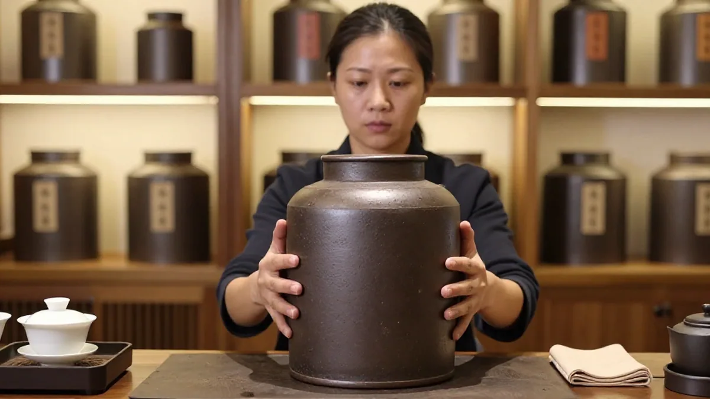
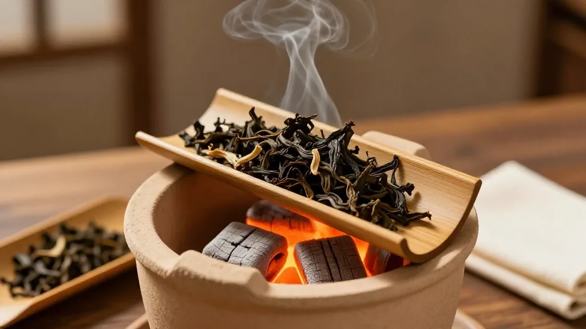
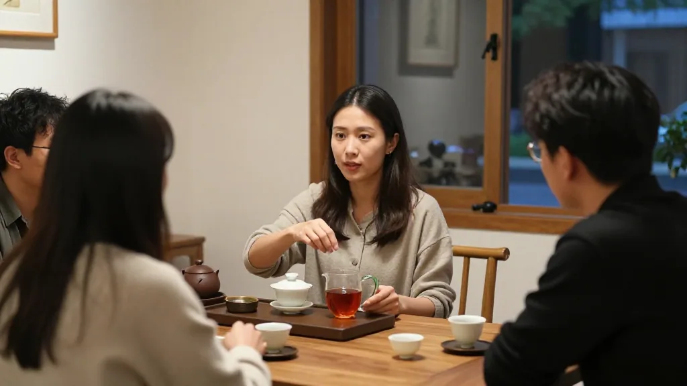
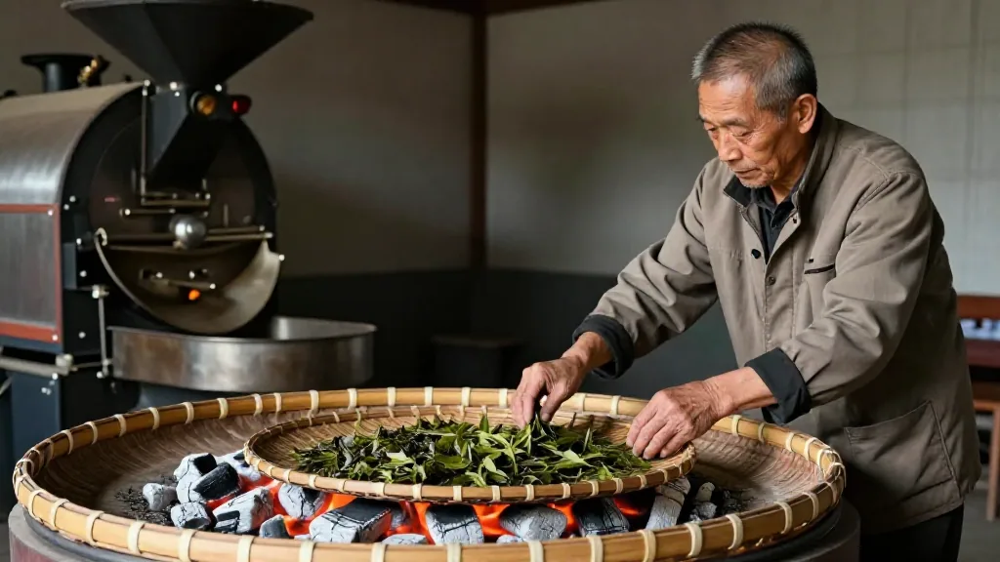
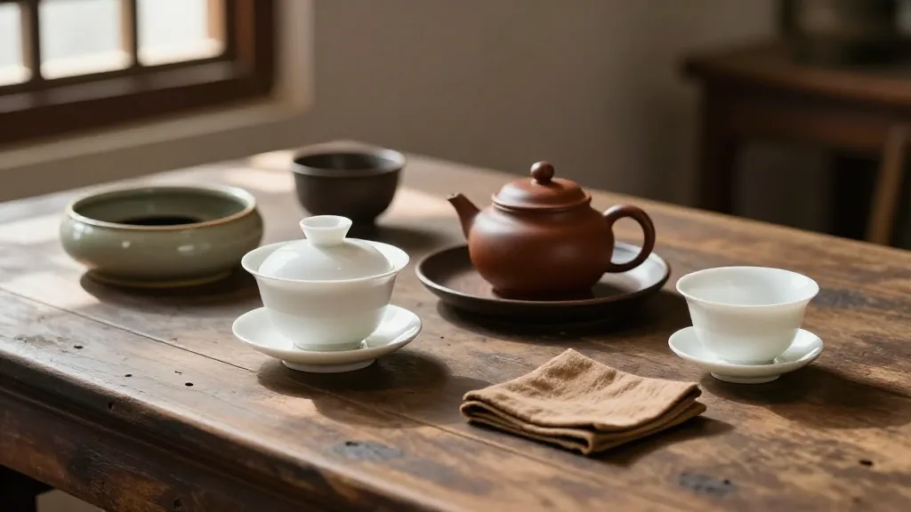

在惠州想喝懂潮州工夫茶？阿凤姐一句话：炭火焙、三泡喝、老枞看喉韵，第四泡见真章。
【场景开头】
10 月 6 号晚上八点，惠州东湖花园沿江路凉快下来，跳广场舞的音乐刚歇。阿凤姐凤凰茶业的小店里，炭炉刚点着，松烟味混着兰花香往外飘。姚老师带着两个朋友进来，后面还跟着张先生，手里抱着个空礼盒，阿明提着刚收档的快递袋也来蹭茶：「凤姐，听说潮州工夫茶申遗了？今晚得给我们讲讲老故事。」

【第一幕：引茶】
阿凤姐笑着从柜台最里面抱出一罐老枞蜜兰香，罐底还贴着张发黄的纸条，是她父亲的字：「凤凰乌岽，春料，炭焙三遍。」她拍拍罐子：「工夫茶三百多年了，清朝那会儿潮州人就这么喝了。我爸在凤凰山做了四十多年茶，七十多岁了还在守焙笼，他说机器焙得快，但炭火焙得透，火气退得干净。」姚老师点头：「怪不得你家茶喝完喉咙是润的。」张先生插话：「我礼盒装的就是要这种有来历的，客户送人体面。」

【第二幕：泡茶】
阿凤姐不慌，先把小泥炉上的炭拨旺，茶叶倒进小烤盘里，在炉上烘了 5 分钟提香，满屋子都是熟果香。她一边烫盖碗一边念叨：「温杯不能省，杯子凉了香就散了。」称了 9 克老枞投进盖碗，100 度开水高冲下去，第一泡洗茶倒掉。她拿起水壶绕圈出汤：「这叫『关公巡城』，每杯都匀一点；再『韩信点兵』，最后几滴最有味，一杯都不能偏。」阿明看得直乐：「凤姐你这手，比奶茶店拉花还稳。」阿凤姐笑：「我爸拿尺子量过我，手抖一下，茶汤就两味了。」
【第三幕：品茶】
第二泡出汤，茶汤红亮清透。阿凤姐让大家先闻公道杯：「凉了还有蜜味才是老枞。」喝到第四泡，喉韵出来了，姚老师闭眼半天：「回甘从喉咙往上涌。」张先生当场算账：「去年中秋拿了二十斤老枞做礼盒，一盒半斤卖 268，客人又追订四十盒。今年我直接拿五十斤，节没到就剩十斤了。」阿明听傻了：「这比我送快递强啊。」

【第四幕：点题】
阿凤姐收着盖碗说：「非遗不在墙上，在每天的炭火里。我爸教我，看茶做茶，看人卖茶。酒楼要耐泡的，茶馆要香高的，礼盒要老枞有故事的，拿错了都砸招牌。」姚老师感叹：「现在年轻人图快，用大杯子泡袋泡茶，哪有这工夫。」阿凤姐摆摆手：「快有快嘅活法，但真的东西穿越时间还是真的。你看张先生，他客户都是大老板，最后认的还是炭火味、老茶人的手艺，这就是三百年没丢的原因。」

【尾声】
一晚上喝到九点半，炭火烧成了白灰，张先生抱着新订的三十斤老枞走了，说赶中秋尾单；姚老师和朋友约好下周带紫砂壶来斗茶；阿明临走还打包了杯冷茶底，说回去拌面吃。阿凤姐吹灭炭火，笑着说：「我爸昨晚还打电话来，说乌岽那棵八十年的老树今年发得好，问我要不要留十斤做明年的老茶？这茶要是焙出来，你们猜第一口会是什么味？」
